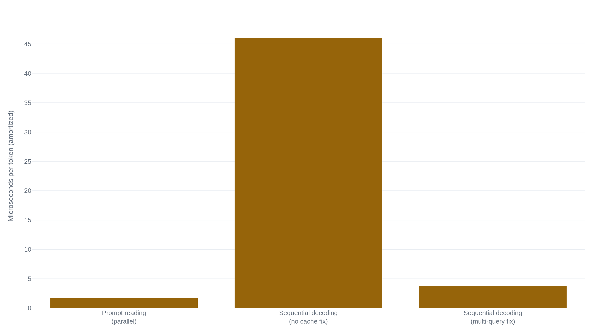

The instant a model writes a token, it becomes fact
Once a language model appends a generated token to its own output, that token becomes ordinary input, indistinguishable from the prompt — and that, not the causal mask everyone points to, is why it never revises a word once written.
Why this matters
Anyone who has used a chatbot has watched the reply build itself word by word, and watched it start down a wrong answer and keep going instead of fixing itself. Both are the same mechanism, showing itself twice. This lesson takes that mechanism apart: how a model turns "predict the next token" into a full reply, and why that process, once started, cannot double back. By the end you can name the exact step that makes revision impossible, and tell it apart from the step people usually blame.
- 01
- Two answers to one prompt diverge at a single draw: how a single token gets chosen from the model's output, the step this lesson picks up right after.
- 02
- An attention head is a weighted average that computes its own weights: the operation inside the mask this lesson leans on without re-deriving.
Predict one token, append it, run the model again
Type "The capital of Australia is" into a chatbot and the answer arrives a piece at a time: a word, then another, each one visible before the next is written. That piece is a token, a whole short word or a fragment of a longer one. The reason is mechanical. A language model does not hold an answer the way a database holds a row. Given the tokens so far, it computes a probability for every token in its vocabulary, tens of thousands of candidates, as the next one. This is stated as a plain equation in the paper that introduced GPT-2: the probability of a whole passage factors into the product, over every position, of that position's probability given every token before it.1 GPT-3, trained at roughly a hundred times the scale, kept the identical objective.2
Run the model on "The capital of Australia is" and it might put real probability on " Canberra," the correct answer. It might also put real probability on " Sydney," the wrong one. Sydney is the Australian city that shows up most in the kind of text the model read, so a sentence shaped like this one often continued with it. A sampler, a separate step, draws one token from that distribution. Say the draw comes back " Sydney." The model does not pause to flag a guess. The token is appended to the running text — "The capital of Australia is Sydney" — and that string, one token longer, becomes the input for the next prediction. Jay Alammar's walk-through of GPT-2 states the loop in one line: after each token is produced, it is added to the sequence of inputs, and the new sequence becomes the input for the next step.3 Repeat enough times and a sentence comes out, one token at a time, because that is literally how it gets built: predict, draw, append, ask again.
Position five can't see position six
Why must the loop run in this order, reading what came before to predict what comes next, rather than sketch the whole reply and revise it? Part of the answer is built into the arithmetic. Inside the model, an attention head builds each token's representation by pulling in information from other positions. Left alone, a position could pull from anywhere in the sequence, including positions after it. The Transformer's decoder blocks that outright, a step its authors call masking: "We also modify the self-attention sub-layer in the decoder stack to prevent positions from attending to subsequent positions... [so] the predictions for position i can depend only on the known outputs at positions less than i."4
In "The capital of Australia is," the fifth token, "is," can read "The," "capital," "of," and "Australia," everything at or before it, and nothing past it. At the moment "is" is being predicted, there is nothing past it to read: the sixth token has not been chosen yet. The calculation behind one position's output never needed a later position's output to run, so the model can produce them one at a time, left to right, without pausing to look ahead.
The instant a token is written, it becomes fact
Masking explains why generation has to move forward. It is tempting to read the same fact as proof a model could never go back and fix an earlier token, but that is a stronger, separate claim. Masking is a property of one forward pass: it says the calculation behind position i only reads positions before it. It says nothing about what happens between passes.
The real reason an ordinary chat reply never revises "Sydney" is a separate, engineering-level choice about how the loop above gets run. Sample one token. Append it. Feed the whole string back in. Never call the model a second time on an edited version of that string. Kwon and colleagues describe the same dependency: each new token depends on all previous tokens, through their cached representations.5 Nothing stops a different system from calling the model again on a hand-edited prefix: delete "Sydney," write "Canberra," and ask again. That is what an "edit" control does, a fresh question about a different string. What does not happen, in one ordinary run, is the model itself deciding partway through to go back. Once appended, a token is history: input like any earlier word in the prompt, not a claim still open.
"Sydney" does not sit there neutrally. It becomes part of the context every later token is predicted from. Asking what comes next after "The capital of Australia is Sydney" is not asking whether Sydney was right, only what continues this exact string. A plausible continuation of a sentence that already asserts Sydney is something like ", which is also the country's largest city," a true detail that reads as support for a claim the model never checked. Researchers named this effect years before GPT-2 existed: when a model's own output stands in for the answer it was trained against, the mismatch "can yield errors that can accumulate quickly along the generated sequence."6 A wrong token becomes evidence, to the next prediction, that the sentence is one where that word belongs.
Every new token waits for the one before it
The append-and-refeed loop has a cost apart from irreversibility: it makes generation slow in a way reading a prompt is not. When a model reads a prompt, every token is already in memory before the first computation starts, so the attention arithmetic for all of them runs at once, in parallel. Generating new tokens cannot, because the identity of the next token is not knowable until the one before it has been drawn. Kwon and colleagues state the split cleanly: the prompt phase parallelizes, because every prompt token is already known, while generation produces the remaining tokens sequentially, one at a time.5 Producing twenty new tokens means running the model twenty separate times, each waiting on the last.
That per-step cost is also why a KV cache exists. At every position, attention needs the earlier tokens' key and value vectors, the representations it compares against and pulls from. Nothing stops a system from recomputing every token's keys and values from scratch at each step. The output would be identical. The cost of doing that is the reason nobody does. Noam Shazeer traced the bottleneck: incremental decoding is slow "due to the memory-bandwidth cost of repeatedly loading the large 'keys' and 'values' tensors" that encode the attention layers' state.7 On his baseline setup, reading a token in the parallel prompt phase costs about 1.7 microseconds. Producing one in ordinary sequential decoding costs about 46 microseconds, roughly 27 times as much, nearly all spent reloading tensors a previous step already computed.7

A cache that keeps those vectors around, instead of recomputing them, claws back most of that gap: the same fix brings the sequential figure to about 3.8 microseconds a token.7 The cache does not remove the sequential dependency. A cache entry still cannot exist until its token has been chosen. It only removes the waste of recomputing what an earlier step already worked out.
The dependency is expensive enough to be worth working around. Speculative decoding runs a cheap model ahead to guess several tokens at once, then checks the guesses against the real model in one parallel pass, keeping the ones that turn out right. A 38-token sentence needed only nine serial calls instead of 38, and "the probability of generating it is unchanged."8 The one-token dependency this lesson is about is still there, underneath it.
Whether there is a plan behind the next token is still open
Everything above is settled: the next-token objective, the mask, the append-and-refeed loop, the sequential cost, the cache. One question the mechanism does not answer by itself is what, if anything, gets decided inside a single forward pass beyond the next word. A model producing one token at a time could be pure improvisation, with no sense of where the sentence is headed, or it could carry some sense of a target further out and use the next token as a step toward it.
Anthropic's interpretability researchers looked directly inside a model, Claude 3.5 Haiku, while it wrote poetry, and found evidence against pure improvisation. Models are trained only to predict the next word, "so one might think the model would rely on pure improvisation." Instead the researchers report "compelling evidence for a planning mechanism."9 The model often activates features for a candidate rhyming word at the end of the next line before it writes the words leading up to it, and suppressing that feature changes which word the line ends on.9 That is first-party evidence of something beyond the immediate next token, computed inside one forward pass.
It does not overturn anything settled above. The model still outputs one token at a time, still cannot revise a token already appended, and the sequential dependency is unaffected by whether a plan exists a few tokens out. What it complicates is the assumption that predicting one token at a time rules out foresight by definition. How far that foresight reaches, and whether it deserves the word "plan," remain open questions.
The takeaway
A reply streams because it is built one prediction at a time, each token appended to the input before the next prediction runs. It never backs up because of what "appended" means: the moment a token joins the sequence, it stops being a guess the model is weighing and starts being input, read exactly like the prompt. Causal masking is why the sequence has to grow left to right. It is not, by itself, why an early mistake survives. What guarantees that is the separate, simpler fact that ordinary generation never calls the model a second time on a revised version of what it already wrote. Once "Sydney" is in, every later token is predicted from a string that already contains it, so the model is never asked whether Sydney was right, only what plausibly follows a sentence that says so.
- 01
- On the Biology of a Large Language Model: the full interpretability study behind the poem-planning evidence in this lesson, including how the researchers traced it.
- 02
- What Is ChatGPT Doing … and Why Does It Work?: a longer, hands-on walk through the same next-word loop, honest about where understanding of it runs out.
Sources
- Radford, Wu, Child, Luan, Amodei & Sutskever · Language Models are Unsupervised Multitask Learners (OpenAI, 2019)
- Brown, Mann, Ryder, Subbiah, et al. · Language Models are Few-Shot Learners (2020)
- Jay Alammar · The Illustrated GPT-2 (Visualizing Transformer Language Models)
- Vaswani, Shazeer, Parmar, et al. · Attention Is All You Need (NeurIPS 2017)
- Kwon, Li, Zhuang, et al. · Efficient Memory Management for Large Language Model Serving with PagedAttention (SOSP 2023)
- Bengio, Vinyals, Jaitly & Shazeer · Scheduled Sampling for Sequence Prediction with Recurrent Neural Networks (NeurIPS 2015)
- Noam Shazeer · Fast Transformer Decoding: One Write-Head is All You Need (2019)
- Leviathan, Kalman & Matias · Fast Inference from Transformers via Speculative Decoding (ICML 2023)
- Anthropic Interpretability Team · On the Biology of a Large Language Model (2025)